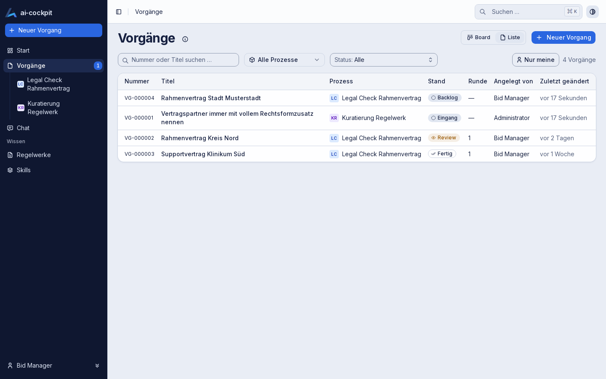
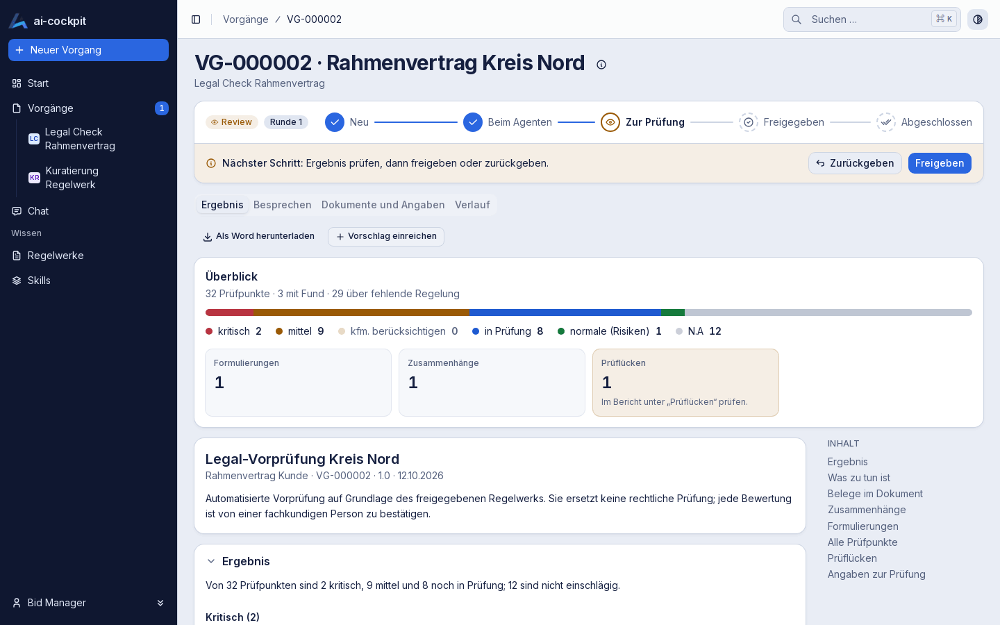
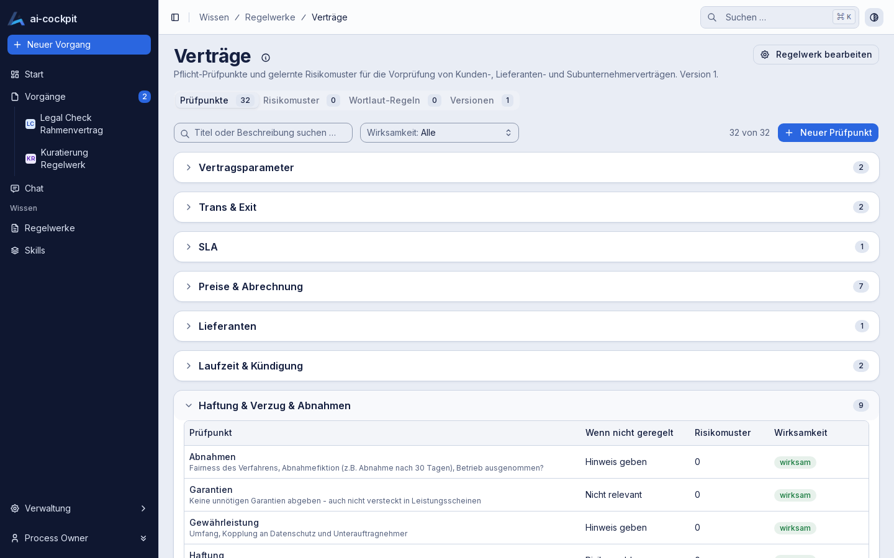
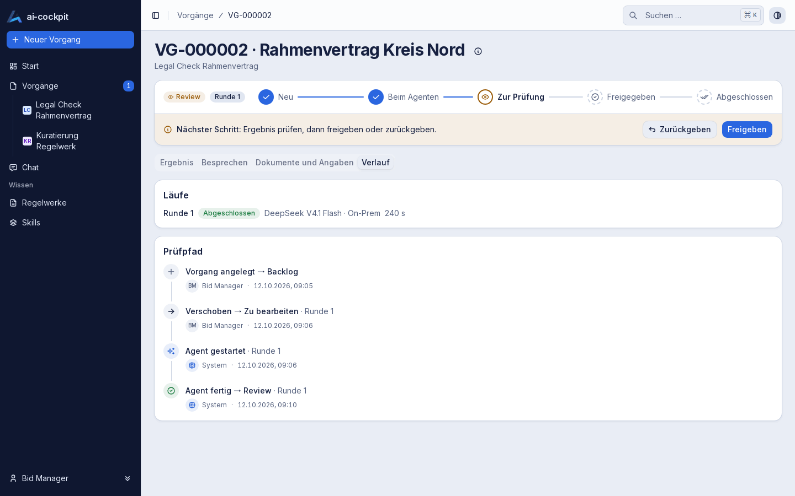
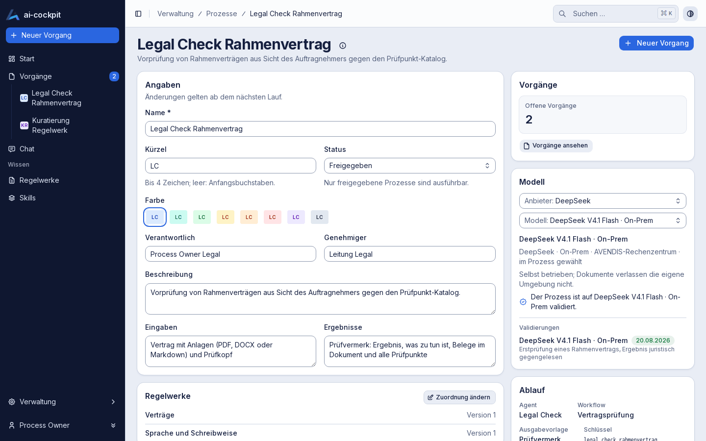
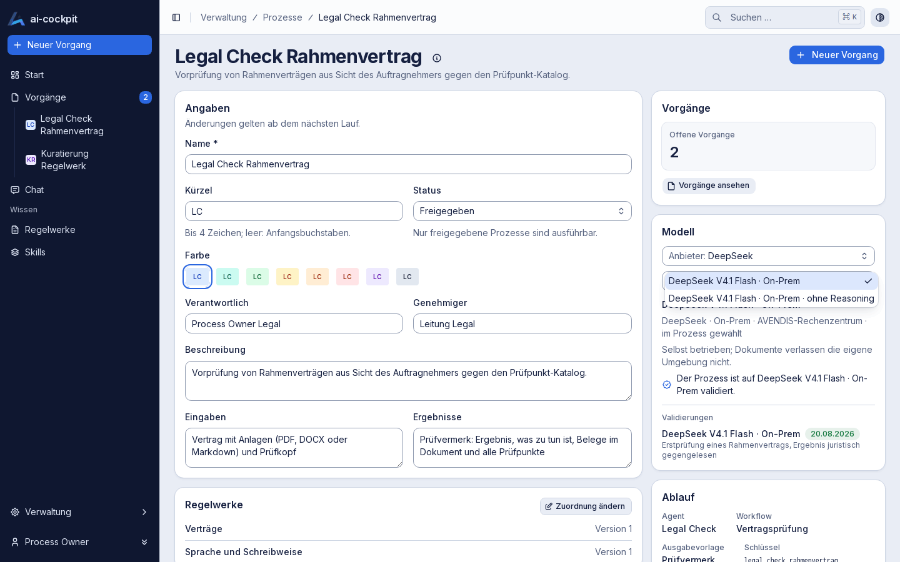
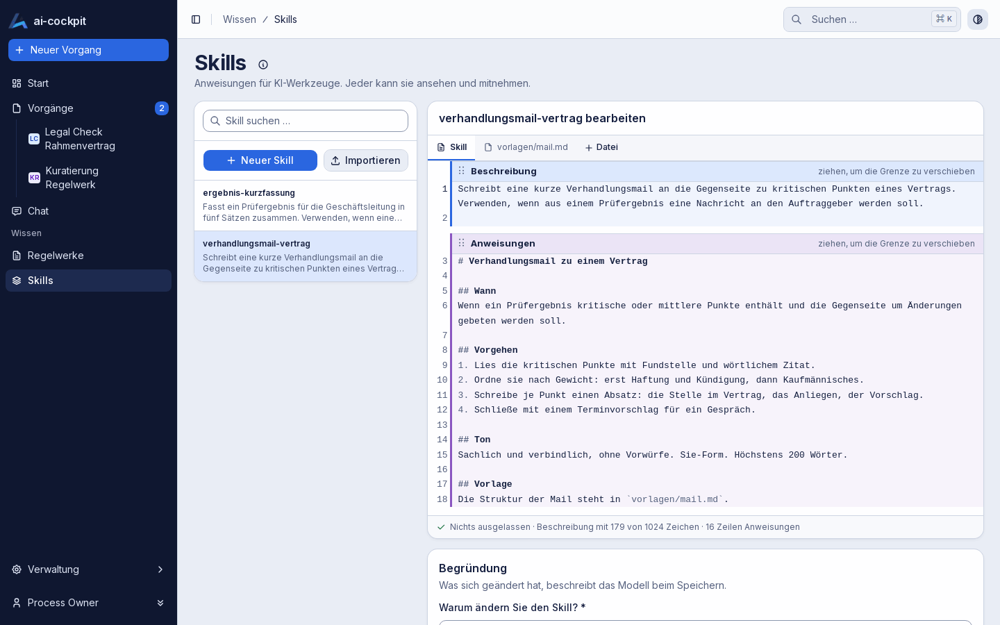
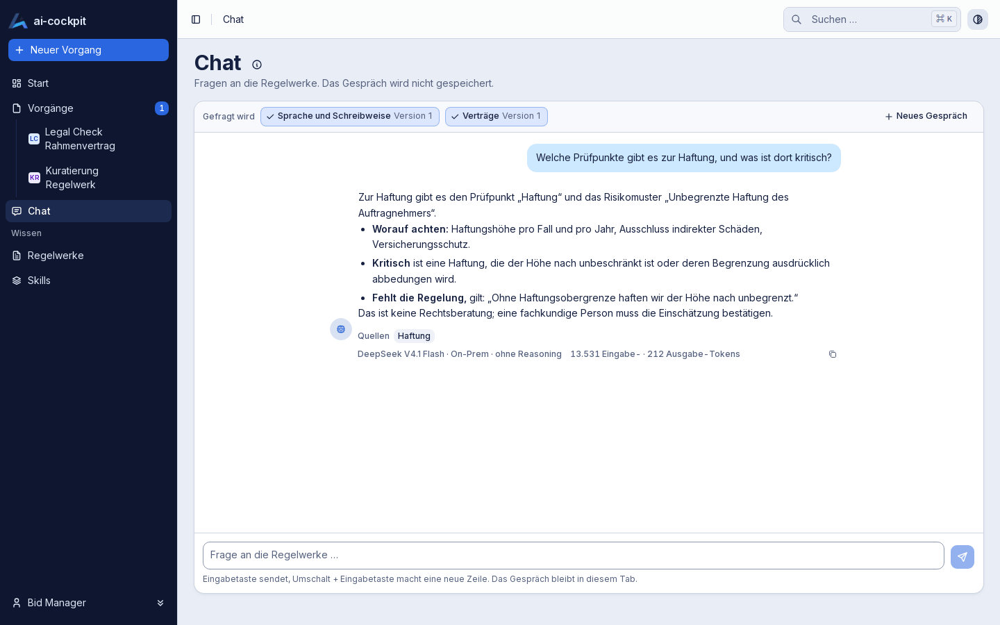

One Compose file
Application, database and agent runtime. A few environment variables, then start.
Features
Every screenshot shows the running application with its demo data. The interface is German.
Work
All cases live in one place. The board shows open cases in stage columns; the list adds finished ones and a status filter. Switching the view keeps what you filtered.

Review
The agent returns data, the platform renders it as a decision aid: first the result and what to do, grouped by action; the evidence quoted from the document, every checkpoint by cluster and wording issues fold open when you need them. The same data becomes a Word document in your template.

Knowledge
Checkpoints, risk patterns and wording rules live in rulesets. Every change creates a new revision with author, time and reason; only released entries take effect.

Governance
Which states, triggered by whom, when, with which reason. The trail is append-only: the database itself refuses to change or delete an entry.

Processes
Each process has one page: what it does, who answers for it, which rulesets it checks against, which model it uses and what it consumed. Whoever sets the process up changes all of it right there — no settings page, no dialog; unsaved changes are asked for before leaving.

Models
Models are managed centrally and chosen per process — first the provider, then the model — or left to the default of area and platform. The process records on which models it was validated; an unvalidated model stays selectable, and the note travels into the result.

Skills
A skill is what an AI tool loads when a task calls for it: a description of when to use it, the instructions, and further files. Everyone can read a skill, copy it or download its SKILL.md. Whoever maintains skills writes them as one text in an editor; two bars inside the text mark where the description and the instructions begin and are dragged to move the boundary.

Chat
Choose which rulesets to ask and put a question. The answer comes from their entries and names them; each one is a link. The chat is a way to look things up, not a general assistant: it answers only from the chosen knowledge.

Operations
Application, database and agent runtime. A few environment variables, then start.
Reports database, agent runtime, document conversion and model gateway — so troubleshooting is not guessing.
The image starts against an empty or an existing database. A second start overwrites nothing.
Credentials, endpoints and keys come from the environment only.
The release pipeline tags images by version, never as a rolling “latest” — so you know what runs and can go back.
Nothing in the core needs an external service. Models run locally or in a region you choose.
Contract review is the first. The same pattern fits other document checks.